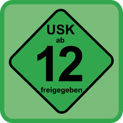

USK
Inhaltsverzeichnis
Die Unterhaltungssoftware Selbstkontrolle  (USK) ist in Deutschland die verantwortliche Stelle für die Prüfung der Altersfreigabe von Computerspielen nach dem Jugendschutzgesetz (JuSchG). Neben den Spieleverpackungen aus dem Handel werden seit 2011 auch Online-Spiele mit einer verbindlichen Altersfreigabe versehen.
(USK) ist in Deutschland die verantwortliche Stelle für die Prüfung der Altersfreigabe von Computerspielen nach dem Jugendschutzgesetz (JuSchG). Neben den Spieleverpackungen aus dem Handel werden seit 2011 auch Online-Spiele mit einer verbindlichen Altersfreigabe versehen.
| USK-Freigaben | |
| Etikett | Aktuelle Kennzeichnung (§ 14 Abs. 2 JuSchG) |
| Freigegeben ohne Altersbeschränkung | |
| Freigegeben ab sechs Jahren | |
| Freigegeben ab zwölf Jahren | |
| Freigegeben ab sechzehn Jahren | |
| Keine Jugendfreigabe | |
Freigegeben ohne Altersbeschränkung¶
Seiten mit Tag „USK0“¶
- Archiv/Spiele/BridgeBuilder
- Archiv/Spiele/Erics Ultimate Solitaire
- Baustelle/Spiele/BridgeBuilder
- Spiele/Airline Tycoon Deluxe
- Spiele/And Yet It Moves
- Spiele/Ankh
- Spiele/Ankh - Herz des Osiris
- Spiele/Atom Zombie Smasher
- Spiele/Barkanoid II
- Spiele/BIT.TRIP BEAT
- Spiele/BIT.TRIP RUNNER
- Spiele/Braid
- Spiele/Bridge Building Game
- Spiele/Christmas Eve Crisis
- Spiele/Cogs
- Spiele/Cortex Command
- Spiele/Crayon Physics Deluxe
- Spiele/Das große Sarah Wiener Kochspiel
- Spiele/Edna bricht aus
- Spiele/Erben der Erde
- Spiele/Family Farm
- Spiele/Gish
- Spiele/GNOME-Games
- Spiele/Goodfolks
- Spiele/Lume
- Spiele/Machinarium
- Spiele/Osmos
- Spiele/PokeMMO
- Spiele/Puzzle Moppet
- Spiele/Race Into Space
- Spiele/Railroad Tycoon II
- Spiele/Re-Volt
- Spiele/Reise nach Nordland
- Spiele/Shatter
- Spiele/To the Moon
- Spiele/Toki Tori
- Spiele/Train Fever
- Spiele/Uplink
- Spiele/Wizorb
- Spiele/World of Goo
- Trash/Spiele/Gish-1
Freigegeben ab sechs Jahren¶
Seiten mit Tag „USK6“¶
- Spiele/Anno 1404
- Spiele/Anno 1602
- Spiele/Ballistics
- Spiele/Cave Story+
- Spiele/Civilization - Call to Power
- Spiele/Clonk Rage
- Spiele/Die Siedler II
- Spiele/Dune Legacy
- Spiele/Fieldrunners
- Spiele/Jack Keane
- Spiele/Lure
- Spiele/Return to the Roots
- Spiele/Theme Hospital
- Spiele/Tiny and Big
- Spiele/Tribal Trouble
- Trash/Spiele/Jack Keane-1
Freigegeben ab zwölf Jahren¶

Seiten mit Tag „USK12“¶
- Archiv/Spiele/Aion
- Archiv/Spiele/JNG
- Archiv/Spiele/Master of Orion 2
- Archiv/Spiele/Neverwinter Nights 2
- Archiv/Spiele/Stronghold Crusader
- Archiv/Spiele/Theocracy
- Archiv/Spiele/Warcraft III
- Archiv/Spiele/World of Warcraft
- Baustelle/Spiele/Descent3
- Spiele/Anomaly 2
- Spiele/Anomaly Warzone Earth
- Spiele/Baphomets Fluch
- Spiele/Barbarian
- Spiele/Bastion
- Spiele/Descent
- Spiele/Descent3
- Spiele/Floyd
- Spiele/Freespace 2
- Spiele/Freespace 2/Konfiguration
- Spiele/Freespace 2/Total Conversions
- Spiele/Gemini Rue
- Spiele/Gothic
- Spiele/Gothic 3
- Spiele/Grim Fandango
- Spiele/Guild Wars 2
- Spiele/Hacker Evolution Duality
- Spiele/Hacker Evolution Untold
- Spiele/Heroes of Might and Magic 3
- Spiele/Knights and Merchants
- Spiele/Kohan
- Spiele/La-Mulana
- Spiele/Majesty Gold
- Spiele/Multiwinia
- Spiele/Neverwinter Nights
- Spiele/OpenMW
- Spiele/Psychonauts
- Spiele/Robin Hood - Die Legende von Sherwood
- Spiele/Rochard
- Spiele/SACRED Gold
- Spiele/Seven Kingdoms
- Spiele/SimCity 3000
- Spiele/SteamWorld Dig
- Spiele/Super Meat Boy
- Spiele/Swords & Soldiers
- Spiele/The Labyrinth of Time
- Spiele/Trine
- Spiele/Trine 2
- Spiele/Warzone 2100
- Spiele/Wing Commander Saga - The Darkest Dawn
- Spiele/World of Padman
- Spiele/X² - Die Bedrohung
- Spiele/X³ REUNION
Freigegeben ab sechzehn Jahren¶
Seiten mit Tag „USK16“¶
- Archiv/Spiele/Counterstrike-Source
- Archiv/Spiele/Myth 2
- Archiv/Spiele/UT2003
- Archiv/Spiele/UT99
- Baustelle/Spiele/Heavy Metal FAKK2
- Doomsday Engine
- Spiele/Amnesia - The Dark Descent
- Spiele/Command & Conquer - Alarmstufe Rot
- Spiele/Command & Conquer - Tiberian Sun + Firestorm
- Spiele/Defcon
- Spiele/Diablo II
- Spiele/Earth 2140
- Spiele/Enemy Territory Quake Wars
- Spiele/Gorky 17: Das dunkle Vermächtnis
- Spiele/GTA
- Spiele/Heavy Metal FAKK2
- Spiele/Heretic II
- Spiele/Penumbra
- Spiele/Quake3
- Spiele/Quake4
- Spiele/Return to Castle Wolfenstein
- Spiele/Serious Sam - The First Encounter
- Spiele/Serious Sam - The Second Encounter
- Spiele/Serious Sam 2
- Spiele/Shadowgrounds
- Spiele/Shadowgrounds Survivor
- Spiele/Star Wars Jedi Knight II - Jedi Outcast
- Spiele/Star Wars Jedi Knight III - Jedi Academy
- Spiele/The Witcher 2 - Assassins of Kings
- Spiele/Torchlight 2
- Spiele/Unreal Tournament
- Spiele/UT2004
- Trash/Spiele/The Witcher 2 - Assassins of Kings-1
- Erstellt mit Inyoka
-
 2004 – 2017 ubuntuusers.de • Einige Rechte vorbehalten
2004 – 2017 ubuntuusers.de • Einige Rechte vorbehalten
Lizenz • Kontakt • Datenschutz • Impressum • Serverstatus -
Serverhousing gespendet von